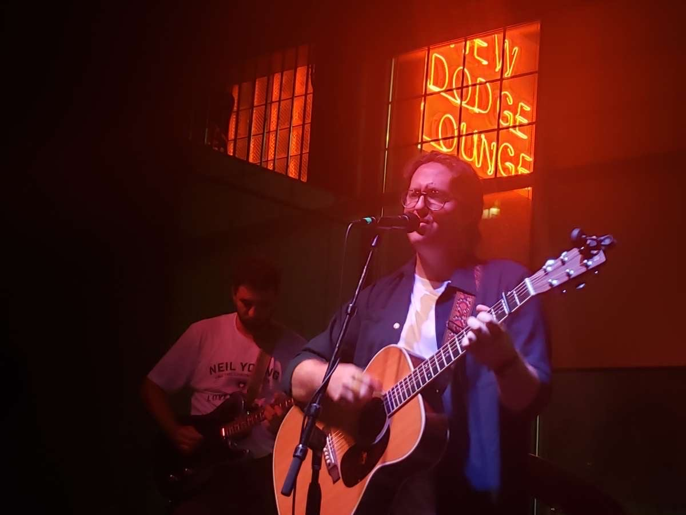
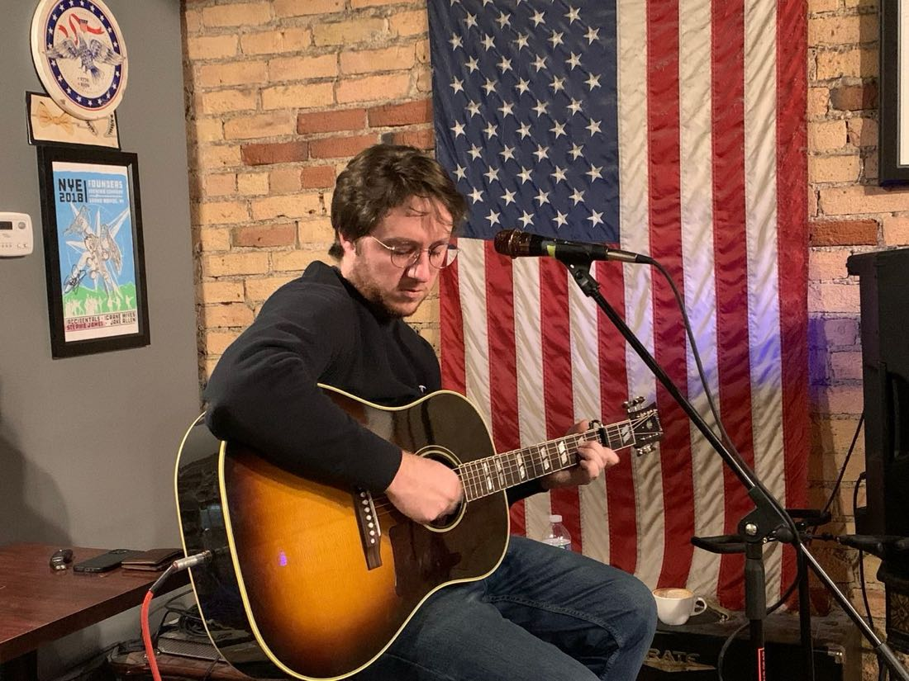
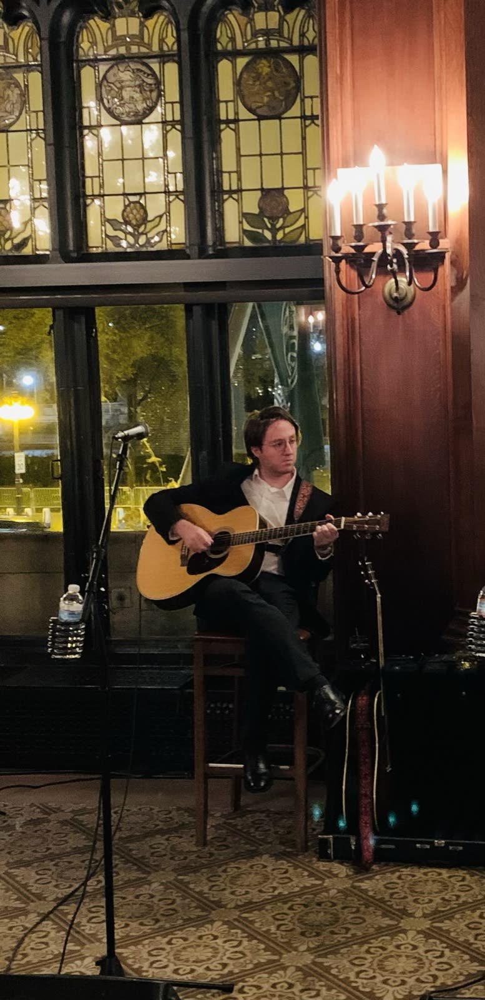
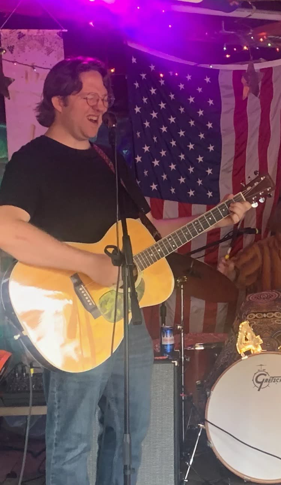
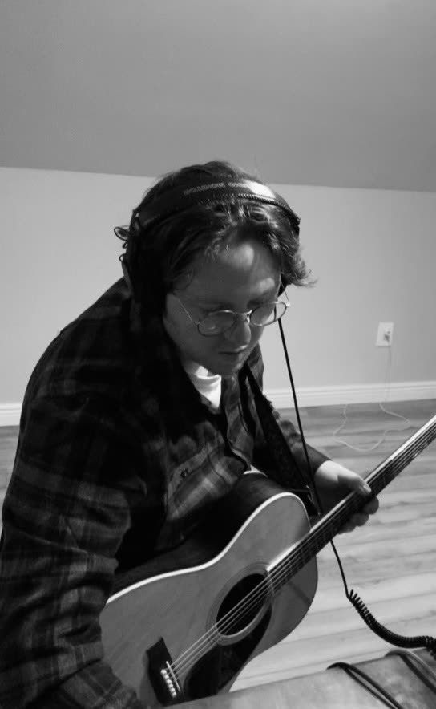
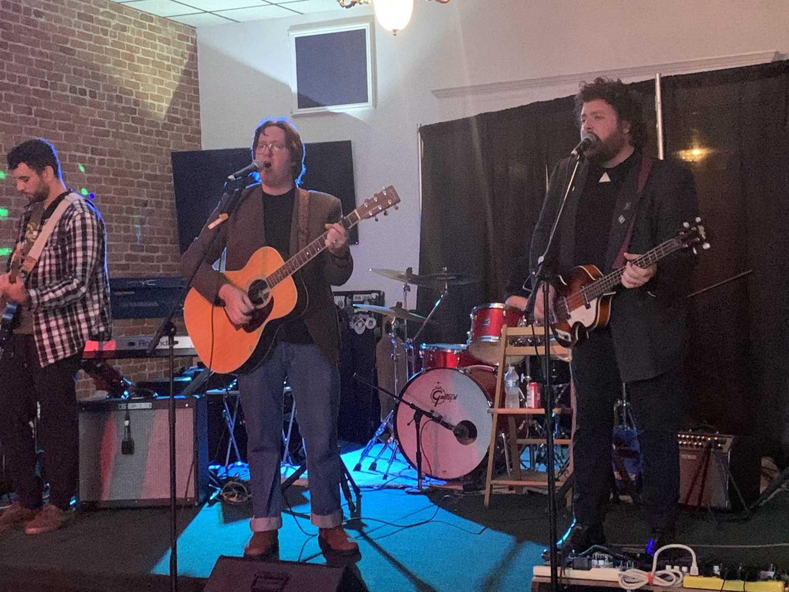
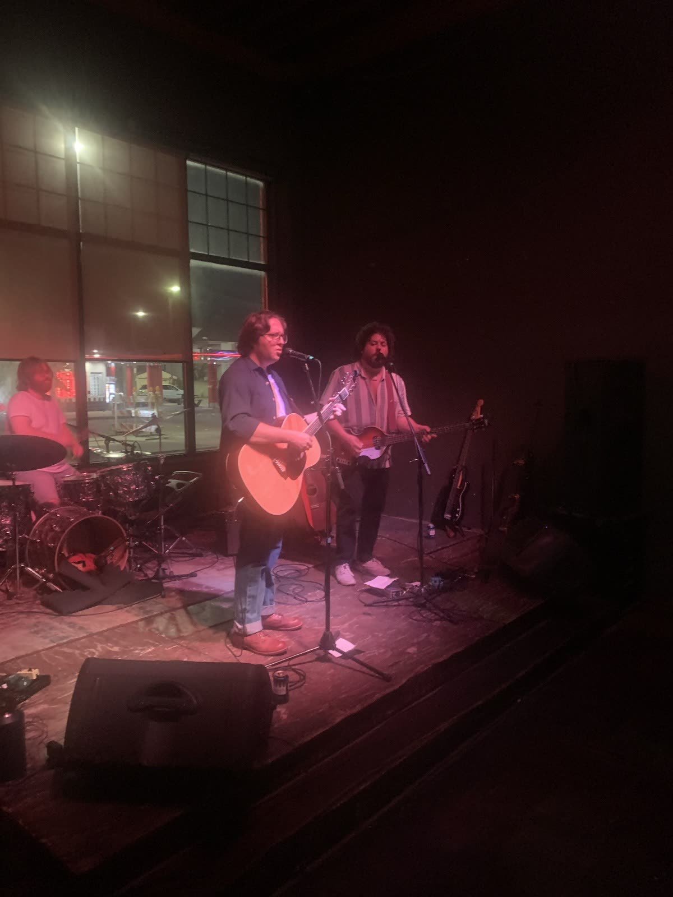
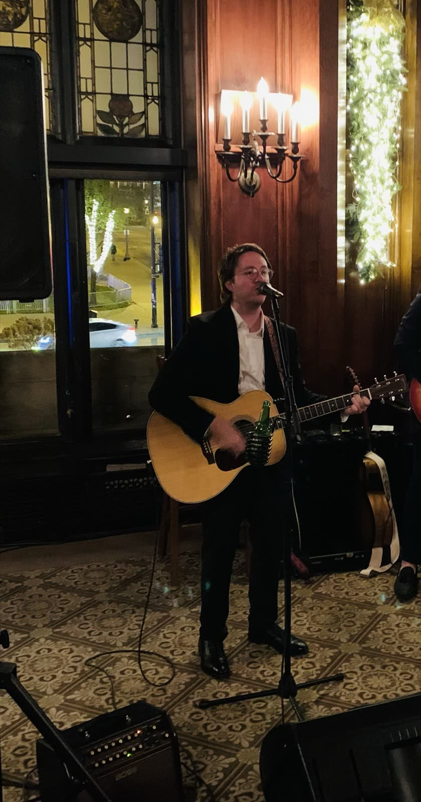
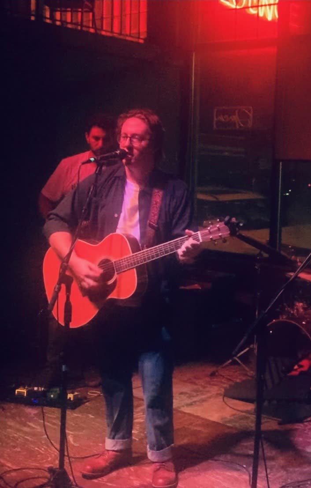

Sweet Babe, live music by Kyle Keaser
Kyle Keaser · Metro Detroit
Live acoustic music: voice, guitar, and songs that fit the room.
RochesterEaglesOldDetroitBar · GrilleStray Cat LoungeNew Dodge LoungeDessert OasisCoffee RoastersWeddingsPartiesCorporate events
An acoustic one-man show, or the band, Sweet Babe.
Bars and lounges around Metro Detroit, weddings, birthdays, and company nights as far as Chicago.









Live atStray Cat Lounge.
Put it on.
Two demos on Bandcamp. Press play right here.
BookSweet Babe.
Tell Kyle the date and the room. He'll take it from there.
Request sent
Thank you, friend.
Really appreciate you taking the time to stop by and reach out. Kyle has your request and will get back to you soon at .
Talk soon,
Kyle & Sweet Babe